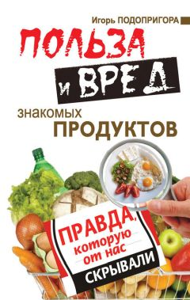

Польза и вред знакомых продуктов

По материалам книги Игоря Подопригоры
" Польза и вред знакомых продуктов. Правда, которую от нас скрывали. "
А также из других источников Интернет
Уважаемый Читатель - после ознакомления с Книгой
рекомендую Вам заказать ее бумажное издание.
Наше здоровье и здоровье наших детей, продолжительность жизни, активность ума в первую очередь зависят от того, что мы ежедневно едим. Это известно людям уже много тысяч лет. И более чем актуально сегодня!
Ведь на прилавках магазинов можно встретить все больше и больше ненатуральных, искусственно созданных пищевых продуктов, которые не только не полезны, а опасны для человека. Как избежать вреда? Кто нас защитит? Ответ один: защитить себя можем только мы сами! И эта книга вам поможет. Она откроет вам правду, которую очень неохотно открывает «потребителям» производитель продуктов.
Давайте разберемся, что кроется за яркой этикеткой и приятным вкусом того или иного продукта; какие продукты действительно полезны нашему организму, а какие представляют собой лишь химические элементы, которые и едой то назвать нельзя; почему даже полезные для многих людей продукты, для некоторых могут оказаться ядом.
Данное издание не является учебником по медицине. Все рекомендации должны быть согласованы с лечащим врачом.
- О пользе и вреде знакомых продуктов.
- Глава 1. Вся правда о хлебе и мучных изделиях.
- «Были бы мука да сито, и сама бы я была сыта».
- Закваска и дрожжи. Чтобы хлеб подошел.
- Вода и пищевые добавки в составе хлеба.
- Белый хлеб: в нем нет ничего полезного для здоровья!.
- Хлеб серый и черный. И пользы больше, и хранится дольше!.
- Хлеб из цельного зерна. Полезен не для всех.
- Хлеб с отрубями. Несомненный лидер для здоровья.
- Макаронные изделия. Толстеть нельзя худеть.
- Глава 2. Вся правда о крупах.
- Какая польза от круп?.
- Какой вред может быть от круп.
- Рис. «Скорая помощь» при многих болезнях.
- Царица круп – гречка.
- «Овсянка, сэр!».
- «Ложечка за маму, ложечка за папу…» Любимая манная каша.
- Красно поле пшеном.
- Перловая и ячневая крупы – солдатская «шрапнель».
- Глава 3. Вся правда о бобовых.
- Наш горох всякому восторг.
- И подарил нам Бог зернышко сои….
- Глава 4. Вся правда о мясе и мясных продуктах.
- Свинина. «Скоростной лифт» к болезням и старости.
- Телятина и говядина. Полезна для зрения, вредна для позвоночника.
- Баранина. Предотвращает диабет и лечит сердце.
- Крольчатина. Лучшее диетическое мясо.
- Курятина. Укрепляет сердце, успокаивает нервы.
- Индейка. Самое полезное птичье мясо.
- Утка. Кладезь витамина А.
- Свиное сало. Действенное средство от депрессии и похмелья.
- Субпродукты (ливер). Сердце, печень, почки и прочая требуха.
- Колбасы. Почему кошки перестали их есть.
- Мясные полуфабрикаты. «Спешишь – здоровью вредишь!».
- Мясные консервы. Еда для особых обстоятельств.
- Мясные бульонные кубики. Недоразумение хозяйки.
- Глава 5. Вся правда о рыбе и морепродуктах.
- Морская и речная рыба. Животный белок в лучшем виде!.
- Кальмары. Бальзам для сердца.
- Креветки. Продлят молодость и излечат от стресса.
- Устрицы и мидии. Лучше Виагры!.
- Морская капуста. Избавит от шлаков и вылечит щитовидку.
- Икра черная, красная, белая. Аккумулятор здоровья.
- Глава 6. Вся правда о молоке и молочных продуктах.
- Молоко. «Что ребенку – польза, то взрослому – вред».
- Сливки. Хороши как маска для лица, вредны для фигуры.
- Кефир. Доктор для желудка.
- Йогурт. Когда полезный продукт превращается во врага!.
- Ряженка. Природный антибиотик.
- Сметана. Источник витамина молодости.
- Творог. «Молочные реки – творожные берега».
- Сыр. Избавит от бессонницы и разгладит морщины.
- Сливочное масло. Излечит язву и туберкулез, но навредит сердцу и сосудам.
- Сгущенное молоко. Самая полезная сладость.
- Мороженое. Лучший антидепрессант!.
- Глава 7. Вся правда о яйцах.
- Куриные яйца. «Снесла курочка яичко…».
- Перепелиные яйца. Уникальный природный комплекс здоровья.
- Вместо эпилога.